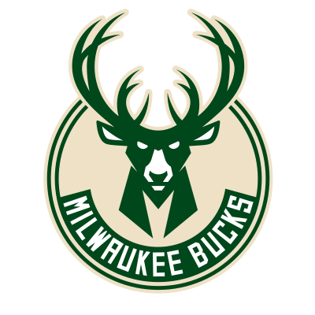

His teams reached the NBA Finals 2 times (2019-20 and 2022-23) without winning the title. In his 512 games for 2 teams over 8 seasons they went 296–216 (57.8%), +80 games over .500, with an average final finish of 9.2. The biggest one-season rise in his career: the Miami Heat went from #17 in 2018-19 to #2 in 2019-20.
Jump to: Record by opponent · Season by season · Teammate help
Compare Duncan Robinson with…
Suggested, same era and similar teammate help:


Final NBA finish, season by season
Title Finals Other playoffs Missed playoffs. #1 = champion; the dashed line is last place that season. Each point opens that season's final standings.
All 30 teams ranked in 2022-23, his best finish (#2)Teammate help
 Jimmy Butler9.54 seasons
Jimmy Butler9.54 seasons Bam Adebayo6.05 seasons
Bam Adebayo6.05 seasons Cade Cunningham5.01 season
Cade Cunningham5.01 season
Career
Career records (W–L, W − L, with and without) include 2026-27 games through Nov. 19, 2026; season counts and finishes are through 2025-26. Each card opens its board in the same scope. How we count.

Latest completed seasons
2026-27 so far
Games through Nov. 19, 2026, the last game in the nightly data. These games are already in his career records above (W–L, win %, W − L, with and without, all marked "incl. 2026-27"). Season counts, final finishes and teammate help use completed seasons through 2025-26; 2026-27 joins them when the season ends.
| Team | His games | With him | Without him | Gap | On/off per 100 | Started / bench | Close games |
|---|---|---|---|---|---|---|---|
| 12 | 8–4 66.7% | 2–0 100.0% | −33.3 | +9.9 | 8–4 / N/A | 3–2 |
Season by season
Newest first; every header sorts. Final NBA finish is the team's rank among all teams that season (#1 = champion) and opens that season's standings. "Without him" uses the team-season window; the span line counts only the games between his first and last game for the team.
| 2025-26 | #5 of 30 | 60–22 73.2% | Lost conf semis 3–4 | 77 of 82 | 58–19 75.3% | 2–3 40.0%span: 2–3, gap +35.3 | +35.3 | |
| 2024-25 | #16 of 30 | 37–45 45.1% | Lost 1st round 0–4 | 74 of 82 | 30–44 40.5% | 7–1 87.5%span: 7–1, gap −47.0 | −47.0 | |
| 2023-24 | #16 of 30 | 46–36 56.1% | Lost 1st round 1–4 | 68 of 82 | 38–30 55.9% | 8–6 57.1%span: 5–5, gap +5.9 | −1.3 | |
| 2022-23 | #2 of 30 | 44–38 53.7% | Lost Finals 1–4 | 42 of 82 | 19–23 45.2% | 25–15 62.5%span: 25–15, gap −17.3 | −17.3 | |
| 2021-22 | #3 of 30 | 53–29 64.6% | Lost conf finals 3–4 | 79 of 82 | 52–27 65.8% | 1–2 33.3%span: 1–2, gap +32.5 | +32.5 | |
| 2020-21 | #13 of 30 | 40–32 55.6% | Lost 1st round 0–4  MIL | 72 of 72 | 40–32 55.6% | N/A | N/A | |
| 2019-20 | #2 of 30 | 44–29 60.3% | Lost Finals 2–4 | 73 of 73 | 44–29 60.3% | N/A | N/A | |
| 2018-19 | #17 of 30 | 39–43 47.6% | Missed playoffs | 15 of 82 | 7–8 46.7% | 32–35 47.8%span: 31–33, gap −1.8 | −1.1 |
On/off, starts and close games
From the lineup data, 1996-97 on. On/off is net points per 100 possessions with him on the floor minus off, a different unit from the win-rate gaps. Started and off the bench are team records in those games; close games are those within 5 points in the last 5 minutes with him on the floor.
| 2025-26 | +3.7 | 58–19 75.3% | N/A | 24–11 68.6% | |
| 2024-25 | +3.1 | 17–20 45.9% | 13–24 35.1% | 8–18 30.8% | |
| 2023-24 | −2.5 | 23–13 63.9% | 15–17 46.9% | 17–14 54.8% | |
| 2022-23 | −3.5 | 0–1 0.0% | 19–22 46.3% | 2–1 66.7% | |
| 2021-22 | −5.5 | 42–26 61.8% | 10–1 90.9% | 9–5 64.3% | |
| 2020-21 | +5.1 | 40–32 55.6% | N/A | 15–14 51.7% | |
| 2019-20 | +11.4 | 41–27 60.3% | 3–2 60.0% | 19–15 55.9% | |
| 2018-19 | −14.7 | 0–1 0.0% | 7–7 50.0% | 1–1 50.0% |
Teammate help by season
Two separate numbers per season, each with every teammate that adds to it. Help this season = Teammates Score points for honors won that season by teammates who shared a game with him. Help coming in = the same teammates' honors from the season before. How help works.
- 2026-27
 DetroitHelp this season: pending (honors are awarded after the season)
DetroitHelp this season: pending (honors are awarded after the season)Help coming in (2025-26 honors of teammates he has played with so far): 9 = 5 Cade Cunningham + 3 Jalen Duren + 1 Ausar Thompson
- 2025-26Detroit
Cade Cunningham All-NBA 1stAll-Star562 g
 Jalen Duren All-NBA 3rdAll-Star366 g
Jalen Duren All-NBA 3rdAll-Star366 g Ausar Thompson All-Def 1st168 g
Ausar Thompson All-Def 1st168 g
Help this season: 9 = 5 Cade Cunningham + 3 Jalen Duren + 1 Ausar Thompson
More: help coming in and other teammates
Help coming in (teammates' honors the season before): 3 = 3 Cade Cunningham
Other teammates (no honors that season): Javonte Green 77 g, Ron Holland 73 g, Daniss Jenkins 67 g, Paul Reed 61 g, Tobias Harris 60 g, Caris LeVert 57 g, Isaiah Stewart 56 g, Marcus Sasser 35 g, Chaz Lanier 31 g, Jaden Ivey 31 g, Kevin Huerter 22 g, Tolu Smith 12 g, Bobi Klintman 11 g, Wendell Moore 6 g and 2 more
- 2024-25
 Miami
Miami
 Tyler Herro All-Star169 gKel'el Ware All-Rookie 2nd0.12556 g
Tyler Herro All-Star169 gKel'el Ware All-Rookie 2nd0.12556 g
Help this season: 1.125 = 1 Tyler Herro + 0.125 Kel'el Ware
More: help coming in and other teammates
Help coming in (teammates' honors the season before): 2.25 = 2 Bam Adebayo + 0.25 Jaime Jaquez
Other teammates (no honors that season): Bam Adebayo 70 g, Haywood Highsmith 66 g, Jaime Jaquez 60 g, Terry Rozier 60 g, Pelle Larsson 48 g, Nikola Jovic 43 g, Alec Burks 41 g, Davion Mitchell 25 g, Jimmy Butler 24 g, Kevin Love 22 g, Kyle Anderson 20 g, Andrew Wiggins 14 g, Keshad Johnson 13 g, Dru Smith 13 g and 3 more
- 2023-24Miami
Bam Adebayo All-StarAll-Def 1st259 g
 Jaime Jaquez All-Rookie 1st0.2562 g
Jaime Jaquez All-Rookie 1st0.2562 g
Help this season: 2.25 = 2 Bam Adebayo + 0.25 Jaime Jaquez
More: help coming in and other teammates
Help coming in (teammates' honors the season before): 4.5 = 3 Jimmy Butler + 1.5 Bam Adebayo
Other teammates (no honors that season): Haywood Highsmith 52 g, Caleb Martin 50 g, Jimmy Butler 48 g, Kevin Love 46 g, Josh Richardson 38 g, Nikola Jovic 36 g, Tyler Herro 36 g, Kyle Lowry 35 g, Thomas Bryant 30 g, Orlando Robinson 29 g, Terry Rozier 23 g, Jamal Cain 18 g, Cole Swider 10 g, Dru Smith 9 g and 4 more
- 2022-23Miami
Jimmy Butler All-NBA 2nd330 gBam Adebayo All-StarAll-Def 2nd1.537 g
Help this season: 4.5 = 3 Jimmy Butler + 1.5 Bam Adebayo
More: help coming in and other teammates
Help coming in (teammates' honors the season before): 2 = 1 Jimmy Butler + 0.5 Bam Adebayo + 0.5 Tyler Herro
Other teammates (no honors that season): Max Strus 42 g, Caleb Martin 37 g, Gabe Vincent 35 g, Tyler Herro 34 g, Kyle Lowry 30 g, Haywood Highsmith 27 g, Victor Oladipo 18 g, Dewayne Dedmon 18 g, Orlando Robinson 12 g, Kevin Love 11 g, Nikola Jovic 11 g, Cody Zeller 9 g, Jamal Cain 9 g, Omer Yurtseven 6 g and 3 more
- 2021-22Miami
Jimmy Butler All-Star154 gTyler Herro Sixth Man0.563 gBam Adebayo All-Def 2nd0.556 g
Help this season: 2 = 1 Jimmy Butler + 0.5 Tyler Herro + 0.5 Bam Adebayo
More: help coming in and other teammates
Help coming in (teammates' honors the season before): 3 = 2.5 Jimmy Butler + 0.5 Bam Adebayo
Other teammates (no honors that season): PJ Tucker 70 g, Max Strus 68 g, Gabe Vincent 68 g, Dewayne Dedmon 67 g, Kyle Lowry 60 g, Caleb Martin 57 g, Omer Yurtseven 53 g, KZ Okpala 21 g, Markieff Morris 17 g, Haywood Highsmith 17 g, Kyle Guy 16 g, Udonis Haslem 13 g, Marcus Garrett 12 g, Victor Oladipo 8 g and 3 more
- 2020-21Miami
Jimmy Butler All-NBA 3rdAll-Def 2nd2.552 gBam Adebayo All-Def 2nd0.564 g
Help this season: 3 = 2.5 Jimmy Butler + 0.5 Bam Adebayo
More: help coming in and other teammates
Help coming in (teammates' honors the season before): 4.875 = 3 Jimmy Butler + 1.5 Bam Adebayo + 0.25 Kendrick Nunn + 0.125 Tyler Herro
Other teammates (no honors that season): Andre Iguodala 63 g, Precious Achiuwa 61 g, Kendrick Nunn 56 g, Tyler Herro 54 g, Goran Dragic 50 g, Gabe Vincent 50 g, Kelly Olynyk 43 g, Max Strus 39 g, KZ Okpala 37 g, Trevor Ariza 30 g, Dewayne Dedmon 16 g, Moe Harkless 11 g, Nemanja Bjelica 11 g, Chris Silva 11 g and 4 more
- 2019-20Miami
Jimmy Butler All-NBA 3rdAll-Star358 gBam Adebayo All-StarAll-Def 2nd1.572 g
 Kendrick Nunn All-Rookie 1st0.2567 gTyler Herro All-Rookie 2nd0.12555 g
Kendrick Nunn All-Rookie 1st0.2567 gTyler Herro All-Rookie 2nd0.12555 g
Help this season: 4.875 = 3 Jimmy Butler + 1.5 Bam Adebayo + 0.25 Kendrick Nunn + 0.125 Tyler Herro
More: help coming in and other teammates
Help coming in (teammates' honors the season before): 0
Other teammates (no honors that season): Kelly Olynyk 67 g, Goran Dragic 59 g, Derrick Jones 59 g, Meyers Leonard 51 g, Chris Silva 44 g, Andre Iguodala 21 g, Jae Crowder 20 g, James Johnson 18 g, Solomon Hill 11 g, Justise Winslow 11 g, Gabe Vincent 9 g, KZ Okpala 5 g, Udonis Haslem 4 g, Daryl Macon 4 g and 2 more
- 2018-19Miami
 Dwyane Wade All-Star113 g
Dwyane Wade All-Star113 g
Help this season: 1 = 1 Dwyane Wade
More: help coming in and other teammates
Help coming in (teammates' honors the season before): 1 = 1 Goran Dragic
Other teammates (no honors that season): Bam Adebayo 15 g, Kelly Olynyk 14 g, Hassan Whiteside 13 g, Dion Waiters 11 g, Josh Richardson 11 g, Goran Dragic 10 g, Derrick Jones 10 g, Rodney McGruder 9 g, James Johnson 9 g, Justise Winslow 8 g, Ryan Anderson 7 g, Udonis Haslem 6 g, Tyler Johnson 3 g, Wayne Ellington 3 g and 2 more
Record against each opponent
- Best regular-season record against one franchise: 19–5 (79.2%) against the Charlotte Hornets in 24 games.
- Toughest regular-season record against one franchise: 7–14 (33.3%) against the Boston Celtics in 21 games.
- Most playoff series against one franchise: 4 against the Boston Celtics, 2–2 in series and 11–12 in games.
Regular season, through 2025-26 (2026-27 games not included): 500 games, 288–212, against 30 franchises.
Grouped by franchise (named as today); game lists keep each team's name that season. Filters and the tab are kept in the URL, so a filtered view can be shared.
| Games list | |||||||
|---|---|---|---|---|---|---|---|
| 26 | 15–11 | 57.7% | +4 | N/A | 2018-19 to 2025-26 | ||
| 25 | 17–8 | 68.0% | +9 | 1–0 (3–0 in games) | 2018-19 to 2025-26 | ||
| 24 | 19–5 | 79.2% | +14 | N/A | 2018-19 to 2025-26 | ||
| 23 | 13–10 | 56.5% | +3 | N/A | 2019-20 to 2025-26 | ||
| 23 | 13–10 | 56.5% | +3 | 1–0 (4–0 in games) | 2018-19 to 2025-26 | ||
| 23 | 16–7 | 69.6% | +9 | 1–0 (4–3 in games) | 2019-20 to 2025-26 | ||
| 23 | 13–10 | 56.5% | +3 | N/A | 2019-20 to 2025-26 | ||
| MilwaukeeMost-faced: Giannis Antetokounmpo (17 games) · Head-to-Head | 22 | 9–13 | 40.9% | −4 | 2–1 (8–6 in games) | 2018-19 to 2025-26 | |
| 21 | 13–8 | 61.9% | +5 | 1–0 (4–1 in games) | 2019-20 to 2025-26 | ||
| 21 | 7–14 | 33.3% | −7 | 2–2 (11–12 in games) | 2019-20 to 2025-26 | ||
| 21 | 14–7 | 66.7% | +7 | N/A | 2019-20 to 2025-26 | ||
| 20 | 11–9 | 55.0% | +2 | 0–2 (3–7 in games) | 2019-20 to 2025-26 | ||
| 19 | 12–7 | 63.2% | +5 | 1–0 (4–2 in games) | 2018-19 to 2025-26 | ||
| 18 | 11–7 | 61.1% | +4 | N/A | 2018-19 to 2024-25 | ||
| 14 | 3–11 | 21.4% | −8 | 0–1 (1–4 in games) | 2018-19 to 2025-26 | ||
| 14 | 5–9 | 35.7% | −4 | N/A | 2018-19 to 2025-26 | ||
| 14 | 10–4 | 71.4% | +6 | N/A | 2019-20 to 2025-26 | ||
| 13 | 7–6 | 53.8% | +1 | N/A | 2018-19 to 2025-26 | ||
| 13 | 9–4 | 69.2% | +5 | 0–1 (2–4 in games) | 2019-20 to 2025-26 | ||
| 13 | 6–7 | 46.2% | −1 | N/A | 2019-20 to 2025-26 | ||
| 13 | 5–8 | 38.5% | −3 | N/A | 2019-20 to 2025-26 | ||
| 13 | 9–4 | 69.2% | +5 | N/A | 2019-20 to 2025-26 | ||
| 13 | 8–5 | 61.5% | +3 | N/A | 2018-19 to 2025-26 | ||
| 13 | 8–5 | 61.5% | +3 | N/A | 2019-20 to 2025-26 | ||
| 12 | 2–10 | 16.7% | −8 | N/A | 2019-20 to 2025-26 | ||
| 11 | 8–3 | 72.7% | +5 | N/A | 2019-20 to 2025-26 | ||
| 11 | 8–3 | 72.7% | +5 | N/A | 2019-20 to 2025-26 | ||
| 11 | 7–4 | 63.6% | +3 | N/A | 2019-20 to 2025-26 | ||
| 10 | 9–1 | 90.0% | +8 | N/A | 2019-20 to 2025-26 | ||
| 3 | 1–2 | 33.3% | −1 | N/A | 2025-26 |
Rows add up to his career record in his games. A playoff series counts when he played in it; early round-robin games show as games only. How we count.
Playoffs, with and without him
| 2025-26 | Lost in the conference semifinals 3–4 to | #5 of 30 | 13 of 14 | 7–6 53.8% | 0–1 0.0% | +53.8 | |
| 2024-25 | Lost in the first round 0–4 to | #16 of 30 | 4 of 4 | 0–4 0.0% | N/A | N/A | |
| 2023-24 | Lost in the first round 1–4 to | #16 of 30 | 5 of 5 | 1–4 20.0% | N/A | N/A | |
| 2022-23 | Lost in the NBA Finals 1–4 to | #2 of 30 | 23 of 23 | 13–10 56.5% | N/A | N/A | |
| 2021-22 | Lost in the conference finals 3–4 to | #3 of 30 | 13 of 18 | 9–4 69.2% | 2–3 40.0% | +29.2 | |
| 2020-21 | Lost in the first round 0–4 to Milwaukee | #13 of 30 | 4 of 4 | 0–4 0.0% | N/A | N/A | |
| 2019-20 | Lost in the NBA Finals 2–4 to | #2 of 30 | 21 of 21 | 14–7 66.7% | N/A | N/A |
Arrival and departure
Team wins per 82 games the season before he arrived vs his first season there, and his last season vs the season after he left. He leaves a team only when his next season with games is for another team (or he never plays again); whole seasons he missed and came back from are one "Missed" row with the team's record without him. Per 82 so short seasons compare fairly. These are team records, not a measure of what he did.
Best duos
Team record in regular-season games both played, top 10 by win %, at least 50 games together.
 Daniss Jenkins
52–15 77.6%
Daniss Jenkins
52–15 77.6% Caris LeVert
43–14 75.4%
Caris LeVert
43–14 75.4% Paul Reed
46–15 75.4%
Paul Reed
46–15 75.4% Javonte Green
58–19 75.3%
Javonte Green
58–19 75.3%- Ausar Thompson
51–17 75.0%
- Cade Cunningham
46–16 74.2%
 Ron Holland
54–19 74.0%
Ron Holland
54–19 74.0% Tobias Harris
44–16 73.3%
Tobias Harris
44–16 73.3% Isaiah Stewart
41–15 73.2%
Isaiah Stewart
41–15 73.2%- Jalen Duren
48–18 72.7%